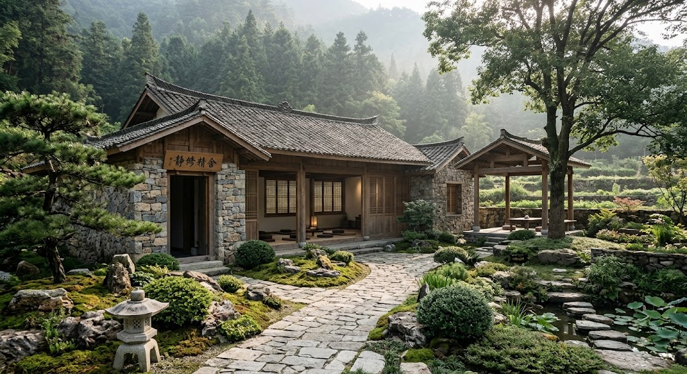
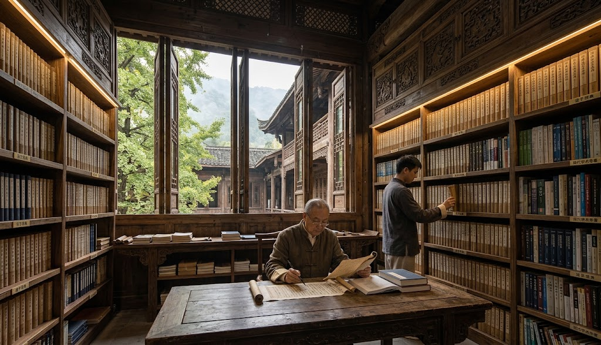
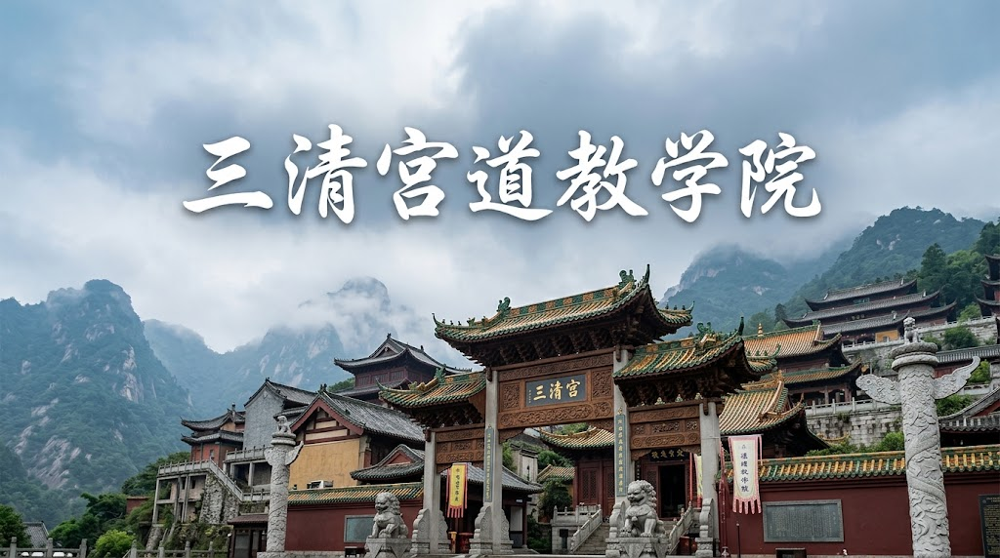

Sanctuary & Campus
清静道场 · 学院风貌
依山傍水、含虚涵静，构筑安顿身心之所

01 / 静修精舍
晨昏调息 · 观心之所
隔绝尘嚣，静坐止息的修心空间

02 / 藏经书阁
义理研索 · 典籍宝库
汇聚诸子经典与现代学术专著

03 / 山水胜境
自然步道 · 经行采气
漫行于山壑流泉之间，融入天地生机

04 / 静修精舍
烹茶论道 · 适性逍遥
于一盏清茗中体味素朴平常心